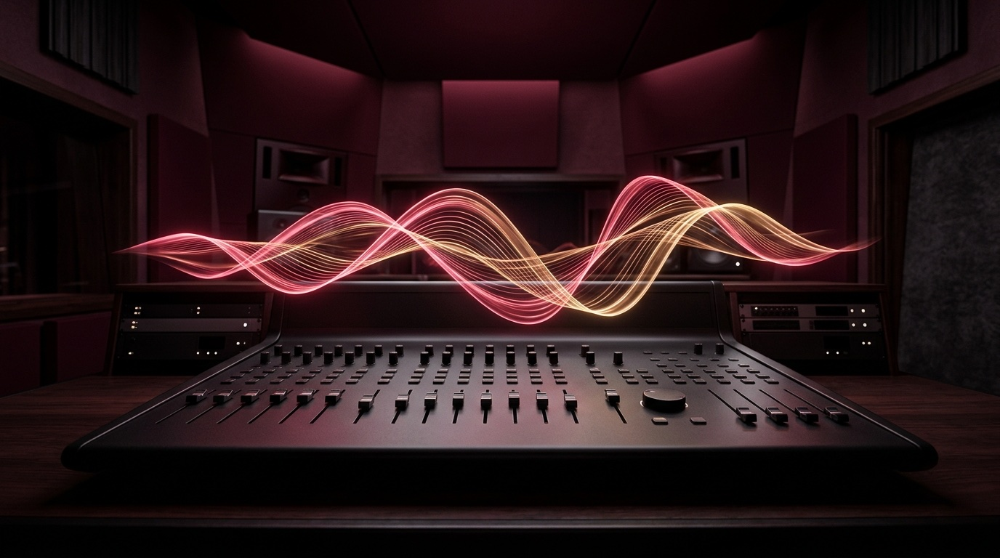
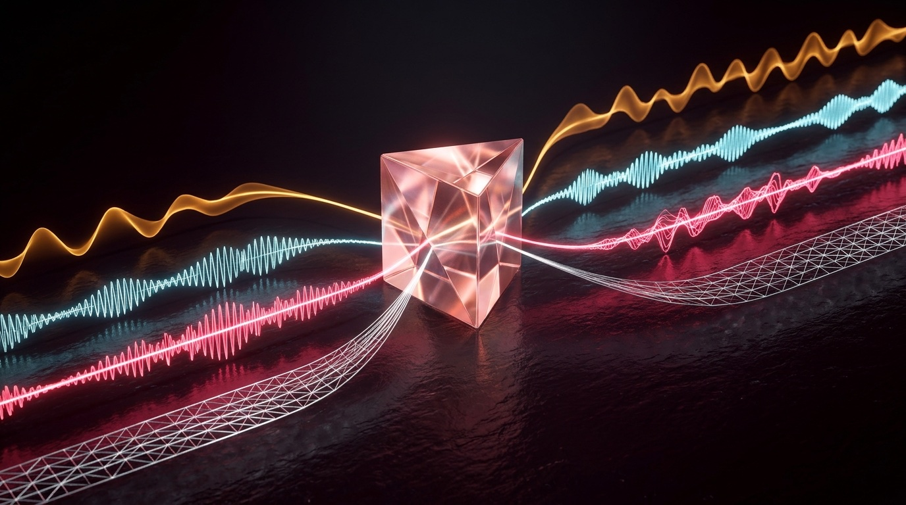

Your complete 12-page visual handbook to songwriting, commercial scoring, and studio finishing—combining Suno v6 meta-tags & 12-stem exports, ElevenLabs Music & looping SFX, Google Lyria 3.5, and 2026 label licensing clarity.

Rather than forcing a single generator to handle vocals, dialogue underscore, sound effects, and final mixing, modern producers route each job to a specialized engine and bring every piece home inside a desktop DAW.
-14 LUFS / -1 dBTPMaster
Think of Suno v6 and Suno Studio as your session band and vocal arranger. You write stage directions like [Intro] and [Chorus], lock a recurring singer with Personas, repair shaky phrases via Replace Section, and pull 12 WAV stems plus tempo-mapped MIDI straight into your DAW.
Think of ElevenLabs Music & SFX and Google Lyria 3.5 as your programmable scoring stage. ElevenLabs pairs Merlin/Kobalt commercial clearance with millisecond cues and seamless loop=True Foley, while gemini-api music generates full 44.1 kHz tracks with embedded SynthID provenance from the terminal.
Great soundtracks fail client audits when they come from the wrong plan tier or lack clean stem files. Install the official SDKs below and match every creative task to the right engine before pressing generate.
pip install -U elevenlabs
export ELEVENLABS_API_KEY="xi-..."
# Python: client = ElevenLabs()pip install -U google-genai
gemini-api music "Lo-fi Rhodes beat, 86 BPM, instrumental" \
-m lyria-3.5 --out ./bed.mp3elevenlabs.io), whereas paid plans waive attribution for web, social, and indie apps.
| Engine / Model | Best Production Fit | Key Technical Specs | 2026 Licensing & Export Reality |
|---|---|---|---|
Suno v6 / v6-wildSuno Studio |
Full vocal tracks, anthems, hooks, multi-part songs | Custom meta-tags, Personas, Replace Section, 12-stem WAV + MIDI (no official API) | Post-WMG/BMG/Believe deals; Free = 0 downloads, Pro = 20/mo, Premier = 60/mo (uncapped in Studio). |
ElevenLabs Musicmusic_v2_5 |
Brand ads, explainer beds, timed video scores | 3s–10m (music_length_ms), composition_plan, stems, SoundCloud publish |
Merlin & Kobalt cleared; Music v1 API sunsets Jan 31, 2027; Film/TV & AAA need Enterprise. |
ElevenLabs SFXeleven_text_to_sound_v2 |
Seamless game loops, UI clicks, ambient Foley | 0.5s–30s, loop=True (v2), prompt_influence, v3 cues |
Paid tiers royalty-free without credit; reselling raw audio as standalone stock packs prohibited. |
Google Lyria 3.5lyria-3.5 / clip |
CLI pipelines, AI Studio prototypes, RealTime DJ | Up to ~3m 44.1 kHz stereo, BPM control, image-to-music ($0.08/song API) | Embeds SynthID watermark & C2PA provenance automatically; artist voice clones blocked. |
UdioLicensed Sandbox |
Interactive fan remixing inside label ecosystem | UMG / WMG authorized artist catalog interactions | Walled-garden controls limit open stem & DAW downloads; prefer Suno or ElevenLabs for scoring. |
Free allows zero downloads (removed Nov 2026). Pro ($10/mo, 2,500 cr) caps exports at 20 songs/mo. Premier ($30/mo, 10,000 cr) gives 60 standard downloads/mo plus uncapped Suno Studio 12-stem WAV & MIDI exports.
Keep Logic Pro (Apple Silicon Neural Engine Stem Splitter) or Ableton Live 12.3+ Suite (Separate Stems to New Audio Tracks) ready alongside ffmpeg for sample-rate normalization (44.1 or 48 kHz / 24-bit WAV).
Treat AI generation like a multitrack recording session rather than a vending machine. These seven studio controls bridge prompt authoring, timeline surgical edits, and multi-stem DAW export.
Warm indie synth-pop, Juno-60 pads, dry punchy drums, 96 BPMPersona: "Velvet Midnight Lead" • Timbre locked across EP[Intro | vinyl Rhodes] → [Verse 1] → [Chorus | stacked harmonies]Replace Section • Extend +32 bars
Lead Vocal • Drums • Bass • Synth Chords • FXGet MIDI (10 cr) + Tempo Map • SFX v2 loop=TrueDownload .WAV Stems + .MID → -14 LUFS
1 Style & Mix Prompt Header: Front-load genre, core instruments, BPM, and dry mix hints (dry drums, upfront vocal) so stems isolate cleanly later.
2 Persona Vocal Lock: Saves a winning voice and tonal vibe as a reusable Persona so sequels, intros, and full albums share the same lead singer.
3 Bracketed Meta-Tag Script: Guides song arc with [Intro], [Pre-Chorus], [Drop], and pipe cues ([Chorus | anthemic]) without singing the tags aloud.
4 Replace Section & Extend Bar: Regenerates weak four-bar or eight-bar spans in place or appends a new bridge/outro locked to the song's key.
5 12-Stem Splitter Rack: Separates vocals, drums, bass, guitars, keys, and textures into isolated channels inside Suno Studio or locally in Logic / Ableton.
6 Get MIDI & Looping SFX Layer: Converts harmonic stems into editable .mid files with tempo maps while blending seamless ElevenLabs Foley loops underneath.
7 Uncompressed WAV & DAW Export: Exports 24-bit WAV stems by clip, time range, or full mix ready for VST upgrades and broadcast loudness mastering.
Suno's v6 family (v6 flagship, v6-wild ideation, and fast v6-mini) rewards clear architectural direction. Pair Custom Mode meta-tags with Personas and Suno Studio's timeline tools to shape radio-ready arrangements.

Always wrap stage cues in square brackets inside the Lyrics box: [Intro], [Verse 1], [Pre-Chorus], [Chorus], [Bridge], [Guitar Solo], [Drop], [Outro], and [Fade Out]. Combine section intent with arrangement modifiers using pipes, such as [Chorus | double-tracked harmonies, wide drums], to force unmistakable energy lifts.
Love a singer's grit or whisper? Save the track as a Persona (plus official opt-in artist Personas on v6) to carry that exact vocal identity into future songs. If one verse stumbles or the ending clips early, highlight the bars in Suno Studio and run Replace Section or anchor the playhead to Extend cleanly in key.
[Intro | airy synth pulse] → [Verse 1 | close vocal] → [Chorus | wide harmonies, driving kick] → [Outro | clean fade out]
When client projects demand clean chain-of-title clearance, exact millisecond timings for video cuts, or continuous ambient soundscapes that never click at the loop boundary, ElevenLabs Music (music_v2_5) and SFX v2/v3 shine.
Call client.music.compose() with model_id="music_v2_5". Set force_instrumental=True with a text prompt to guarantee zero stray vocals, pass music_length_ms (3,000–600,000 ms) for an exact spot, or supply a structured composition_plan with timed sections for intros, drops, and finales.
v2 vs v3)
Call client.text_to_sound_effects.convert() with duration_seconds (0.5–30s) and prompt_influence (0.3 default; raise to 0.6–0.8 for strict adherence). Target model_id="eleven_text_to_sound_v2" whenever setting loop=True so the tail blends seamlessly back into frame zero; pick v3 for multi-event Foley cues.
from elevenlabs.client import ElevenLabs
client = ElevenLabs() # reads ELEVENLABS_API_KEY
# 1. Timed instrumental underscore using composition_plan (60 seconds total)
score = client.music.compose(
model_id="music_v2_5",
composition_plan={
"positive_global_styles": ["instrumental", "felt piano"], "negative_global_styles": ["vocals"],
"sections": [
{"section_name": "Intro", "duration_ms": 20000, "positive_local_styles": ["92 BPM pulse"],
"negative_local_styles": [], "lines": []},
{"section_name": "Lift", "duration_ms": 40000, "positive_local_styles": ["warm cello swell"],
"negative_local_styles": [], "lines": []},
],
},
)
with open("brand_score.mp3", "wb") as f:
for chunk in score: f.write(chunk)
# 2. Seamless 12-second looping rain & vinyl room tone for games or video
sfx = client.text_to_sound_effects.convert(
text="Gentle evening rain on studio skylight with soft analog tape warmth",
model_id="eleven_text_to_sound_v2", duration_seconds=12.0, loop=True, prompt_influence=0.55,
)
with open("rain_loop.mp3", "wb") as f:
for chunk in sfx: f.write(chunk)seed & Tune prompt_influenceseed alongside an updated music_length_ms to preserve harmonic texture. On SFX loops, keep prompt_influence around 0.45–0.65 so the model obeys your acoustic details without sounding stiff.
Google's lyria-3.5 unifies full-length 44.1 kHz stereo music generation inside the same Gemini API and gemini-api CLI used for text and video—bringing scriptable soundtracks, multimodal image cues, and SynthID into any workflow.
lyria-3.5 Full SongsProduces coherent ~3-minute songs with verses, choruses, bridges, explicit BPM conditioning, global vocal languages (EN, ES, DE, FR, HI, JA, KO, PT), or custom user lyrics.
lyria-3-clip-previewPurpose-built for snappy 30-second previews, podcast stingers, and fast loop tests through the Interactions API when you do not need a multi-verse structure.
Use Google AI Studio for Prompt DJ live morphing via Lyria RealTime WebSockets or image-to-music generation driven directly by storyboard art.
gemini-api music & Interactions)# 1. Generate a BPM-locked track directly from the shell (--out writes audio, prints path)
gemini-api music "Cinematic synthwave instrumental, analog arp, warm bass, 112 BPM, no vocals" \
-m lyria-3.5 --out ./cues/neon_chase.mp3
# 2. Read brief from file (-f) or piped stdin (--stdin required when piping plain text!)
cat song_brief.txt | gemini-api music --stdin -m lyria-3.5 -o json --out ./cues/theme.mp3
gemini-api music -f song_brief.txt -m lyria-3.5 --dry-run # inspect HTTP payload offline
# 3. Python Google GenAI SDK (Interactions API with base64 output_audio)
import base64
from google import genai
client = genai.Client()
res = client.interactions.create(
model="lyria-3.5",
input="Indie acoustic folk, uplifting mood, fingerpicked guitar, 108 BPM, instrumental, no vocals.",
)
with open("acoustic_bed.mp3", "wb") as f:
f.write(base64.b64decode(res.output_audio.data))"instrumental, no vocals" so the singer stays silent. Every output carries an imperceptible SynthID audio watermark and C2PA signature that persist through MP3 compression and re-recording.
--stdin When Piping Textgemini-api music parses piped stdin as a raw JSON --body payload unless you explicitly add --stdin (or load a text file with -f brief.txt). Passing -o json writes the file and emits {kind, path, size_bytes, mime_type, response_id, status} for downstream scripts.
Cloud generations sound exciting on laptop speakers yet often carry synth fizz, uneven low end, or subtle tempo drift. Export stems and MIDI into Logic Pro or Ableton Live 12.3+ to transform drafts into release-grade masters.
Inside Suno Studio, open the Stems panel to split songs into up to 12 stems (vocals, drums, bass, chords, FX), run Get MIDI (~10 credits) for melodic/chord tracks with tempo maps, and download uncompressed .wav clips. Offline on your Mac or PC, use Logic Pro's Stem Splitter (including drum kit sub-stems) or right-click any clip in Ableton Live 12.3+ Suite to run Separate Stems to New Audio Tracks.
Drag extracted bass or synth MIDI onto rich software instruments (Alchemy, Wavetable, Kontakt) to replace metallic AI timbre with clean studio transients. Group stems onto Drum, Bass, Music, and Vocal sub-buses, carve space around 250–400 Hz mud, and finish via Mastering Assistant or Ozone at -14 LUFS (streaming) or -24 LKFS (broadcast) with a -1.0 dBTP peak ceiling.
.mid file—or warping your WAV stems onto bar markers inside Logic Flex Time or Ableton Warp—locks every bar cleanly so live percussion and video edits snap in sync.
1. Gain-Stage Stems (-12 dBFS peaks): Pull faders down before bus plugins so AI transients never clip. •
2. Dynamic De-Masking EQ: Carve 2–3 dB around 300 Hz on chords and sidechain bass gently against the kick. •
3. Clean Limiter Ceiling: Run Logic Mastering Assistant or iZotope Ozone at -1.0 dBTP true peak to stop codec distortion on Spotify and YouTube.
Put these five field-tested patterns straight into Suno Custom Mode, Python audio pipelines, or terminal soundtrack scripts—each verified against 2026 API signatures and licensing best practices.
| Recipe & Engine | Production Goal | Copy-Paste Pattern / Command |
|---|---|---|
1. Suno v6 Brand AnthemSuno v6 + Studio |
Lock one recurring singer across a full product campaign. |
Style: Upbeat indie synth-pop, dry drums, upfront vocal, 108 BPMLyrics: [Intro | warm Juno arps] [Verse 1] ... [Chorus | stacked harmonies] → save Persona → fix weak bars via Replace Section.
|
2. Timed Explainer BedElevenLabs music_v2_5 |
Exact 75-second vocal-free track cleared for paid social ads. |
client.music.compose(prompt="Warm marimba, acoustic bass, subtle shaker, 94 BPM", music_length_ms=75000, force_instrumental=True, model_id="music_v2_5")
|
3. Click-Free Ambient Loopeleven_text_to_sound_v2 |
15s seamless background room/rain bed for games or YouTube. |
client.text_to_sound_effects.convert(text="Soft cedar cabin rain & warm analog tape hum", model_id="eleven_text_to_sound_v2", duration_seconds=15.0, loop=True, prompt_influence=0.55)
|
4. Scripted Score Batchgemini-api music |
Generate JSON-tracked cues in CI or video build scripts. |
gemini-api music -f cue_brief.txt -m lyria-3.5 -o json --out ./cues/hero_score.mp3Append --dry-run first to validate payloads without spending quota.
|
5. Hybrid AI-to-DAW MasterStems + MIDI + DAW |
Upgrade AI synth bass/keys with pro VSTs & release loudness. |
Run Suno 12-Stem Split + Get MIDI → drag .wav + .mid into Logic Pro or Ableton Live → re-voice synth MIDI → master to -14 LUFS / -1.0 dBTP.
|
#!/usr/bin/env bash — Generate a Lyria 3.5 hero cue, validate metadata, and normalize to 48 kHz WAV
set -euo pipefail
CUE_JSON=$(gemini-api music "Warm documentary piano and muted strings, hopeful mood, 88 BPM, instrumental, no vocals" \
-m lyria-3.5 -o json --out ./build/doc_cue.mp3)
RAW_MP3=$(echo "$CUE_JSON" | python3 -c 'import sys,json; print(json.load(sys.stdin)["path"])')
ffmpeg -y -i "$RAW_MP3" -ar 48000 -ac 2 -c:a pcm_s24le ./build/doc_cue_48k_24bit.wavffmpeg prevents pitch drift and avoids MP3 encoder padding gaps on rhythmic cuts.
Landmark 2025–2026 label settlements transformed AI audio from a legal gray zone into tiered licensing agreements. Protect clients and releases by matching plan rights, provenance tags, and human authorship before publishing.
lyria-3.5 embeds SynthID wave-level watermarks and C2PA cryptographic metadata automatically—surviving MP3 compression, edits, and analog speaker re-recording.cue_sheet_clearance.json){
"project": "Autumn Brand Launch Film",
"cues": [
{ "file": "01_hero_anthem.wav", "engine": "suno-v6", "tier": "Premier", "human_layers": ["custom_lyrics", "live_guitar", "logic_vst_bass"] },
{ "file": "02_explainer_bed.wav", "engine": "elevenlabs-music_v2_5", "tier": "Pro_Paid", "attribution_required": false },
{ "file": "03_broll_stinger.mp3", "engine": "google-lyria-3.5", "provenance": ["SynthID", "C2PA"], "instrumental": true }
]
}Combine all three engines with your desktop DAW into a seamless four-stage production house—moving from rapid scriptable ideation and vocal hooks to dialogue-safe beds, clean stem splits, and broadcast-ready masters.
Explore chord moods in gemini-api music or Suno v6-mini before burning heavy Studio credits, then lock your chosen Persona voice for consistency across every deliverable.
Let Suno carry sung hooks while ElevenLabs generates millisecond-accurate force_instrumental underscore and loop=True ambient textures beneath spoken narration.
Re-voicing extracted MIDI with pro VSTs and recording a live acoustic instrument overdub elevates audio fidelity while anchoring statutory human authorship.
lyria-3.5 (2 minutes) → lock timed instrumental underscore and a 12-second loop=True ambience bed in ElevenLabs (4 minutes) → pull stems and MIDI into Logic or Ableton, layer a live acoustic motif, and bounce a -14 LUFS master plus cue_sheet_clearance.json (9 minutes).
Bookmark this final page before bouncing a soundtrack or shipping client stems. Almost every AI music snag comes down to one of these seven fast fixes.
| Symptom / Failure | Root Cause | 10-Second Fix |
|---|---|---|
| 1. Stray Vocals in Underscore | Generator improvised singing over a background score prompt. | Pass force_instrumental=True in ElevenLabs Music or explicitly write "instrumental, no vocals" in Lyria 3.5 & Suno. |
2. Singer Sings [Bridge] Aloud |
Section cues placed in parentheses or malformed brackets. | Wrap stage instructions strictly in square brackets ([Chorus | wide harmonies]) inside Suno's Custom Lyrics box. |
| 3. Audible Click at Loop Seam | Wrong SFX model chosen or sharp drum transient hits at the tail. | Use model_id="eleven_text_to_sound_v2" with loop=True and prompt continuous steady-state textures. |
| 4. Stems Drift Off DAW Click Grid | AI audio breathes subtly in tempo between verses and choruses. | Export Suno Get MIDI with its tempo map or snap bars manually with Logic Flex Time / Ableton Warp. |
| 5. Artist-Style Prompt Blocked | 2026 label safety filters reject living artist names & voice clones. | Describe sonic ingredients instead (e.g., 1980s analog chorus guitar, warm baritone, dry tape snare). |
6. gemini-api music Pipe Error |
Piped text treated as JSON --body payload by default. |
Add --stdin when piping plain prompts (cat brief.txt | gemini-api music --stdin) or pass -f brief.txt. |
| 7. Client Flags License Violation | Track created on Free tier or used in Film/Broadcast without Enterprise. | Regenerate under Suno Pro/Premier or ElevenLabs Paid/Enterprise and attach a cue_sheet_clearance.json log. |
loop=True SFX repeat seamlessly over 60+ seconds..mid files, and original prompt strings together.-14 LUFS (streaming) or -24 LKFS (broadcast) with -1.0 dBTP true peak ceiling.